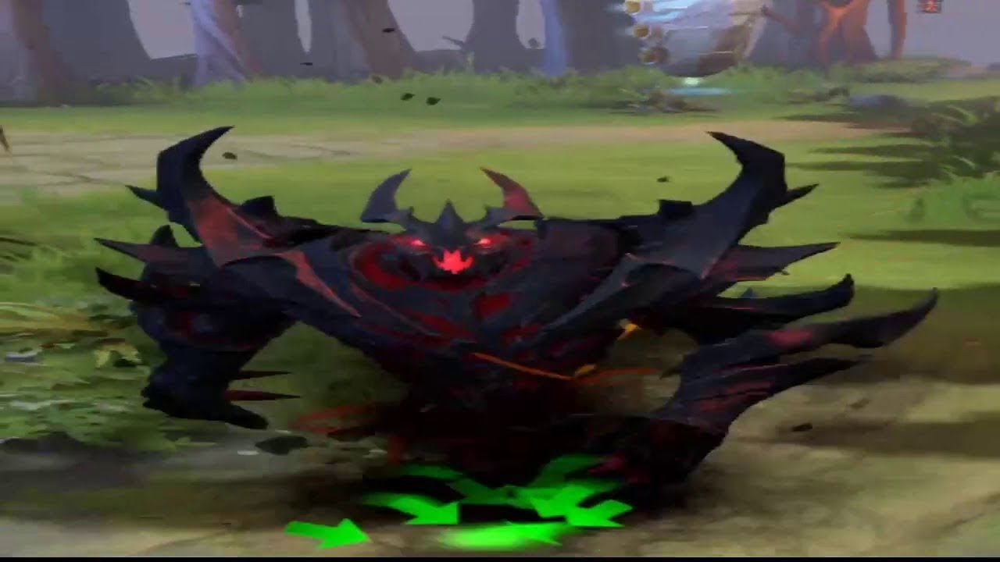

Приветствуем на сайте
Данный сайт будет разделён на 3 части. В первой части будет рассказано о игре CS:GO. Во второй части будет рассказано о игре Minecraft. В третьй части будет рассказано о игре Dota 2.
Dota 2
Dota 2 - командная тактико-стратегическая игра с элементами
компьютерной ролевой игры, в которой каждый игрок управляет
одним героем, и, если герой имеет соответствующие способности,
некоторым количеством дополнительных существ. Во время
игрового процесса, с течением времени и в зависимости от
успешности своих действий игрок получает опыт, открывая новые
способности своего героя, и деньги, которые он тратит на покупку
различных предметов. Основная задача игры для каждой из двух
команд — уничтожить вражеский лагерь, защищённый башнями.
Игроки контролируют только своего героя (и, возможно,
несколько призванных или захваченных существ); героям
помогают юниты, управляемые компьютером, которые
называются «кри́пы»
Плюсы игры
1. Приятная графика, которую улучшают с выходами обновлений.
2. Улучшение реакции и логики (в этой игре реакция и логика важна прежде асего, для того, чтобы выбрать правильную расскачку, делать правильные тактические действия и уклоняться от скиллов)
3. Развивает стратегическое мышление.
4. Разнообразие. В игре много персонажей с уникальными умениями, также много различных предметов.
5. Игра бесплатная.
6. Донат никак не решает.
Минусы игры
1. Плохое комьюнити. Каждый может разобрать вас по падежам, припомнить ваших родных и т.д. за какую либо ошибку или личную неприязнь, не боясь потерять аккаунт.
2. Высокий порог входа. В доту сложно научиться играть самому, если у вас не было опыта в MOBA играх или нет терпеливого друга дотера, который мог бы вам помочь.
3. Затягивает. Некоторые люди могут играть в доту по 8 игр в день.
Всеми любимый персонаж
Самым любимом персонажем является Pudge
Самые противные персонажи
Tinker
Arc Varden
Персонаж субкультуры Dead Inside
Данным персонажем является Shadow Fiend. Также люди выявляют кто играет лучше в лобби zxc.

Конец
Автор
Данковцев Дмитрий